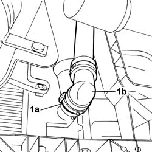
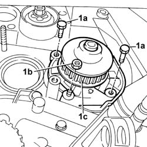

1088C14 water pump - r + r with drive belt removed
- Path
- Procedures > 10 ENGINE UNIT > 1088 ENGINE COOLING > 1088C water pump and thermostat > 1088C14 water pump - r + r with drive belt removed
- Kind
- repair procedure (removal / refitting; the operation number is the code)
- Applies to
- engines: 1.1, 1.2 8v; all production periods
- Interactive page
- https://sloeber94.github.io/elrnDB-fPnd/en/#/2752542
Applies to: engines: 1.1; all production periods
 Removing
Removing
 Refitting
RefittingPosition a suitable container to collect the coolant.
1. Disconnect the lower radiator hose (1b), working on the fastening band (1a) and drain the system.

Applies to: engines: 1.2 8v; all production periods
Removing
RefittingPosition a suitable container to collect the coolant.
1. Disconnect the lower radiator hose (1b), working on the fastening band (1a), and drain the system.
Applies to: engines: 1.1; all production periods
1. Undo the fixing bolts (1a) and the nut (1b) and remove the water pump (1c).

Applies to: engines: 1.2 8v; all production periods
1. Undo the fixing bolts (1a) and the nut (1b) and remove the water pump (1c).
Applies to: engines: 1.1; all production periods
Refitting
RemovingClean the contact surfaces thoroughly and renew the sealant bead between the water pump and the crankcase.
Fit the coolant pump and tighten the bolts to torque.
 | Fastening | Component | Ø | Value (daNm) |
|---|---|---|---|---|
- | Bolt | FRONT BRAKE DISC. | M8 | (Disc tightening) 1.2 |
Tighten the water pump fixing nut.
Fit the coolant hose on the engine radiator and refit the fastening band.
Applies to: engines: 1.2 8v; all production periods
Refitting
RemovingClean the contact surfaces thoroughly and renew the bead of sealant between the water pump and the crankcase.
Fit the coolant pump and tighten the bolts to torque.
| Fastening | Component | Ø | Value (daNm) |
|---|---|---|---|---|
- | Bolt | FRONT BRAKE DISC. | M8 | (Disc tightening) 1.2 |
Tighten the nut fixing the water pump.
Fit the coolant hose on the engine radiator and refit the fastening band.